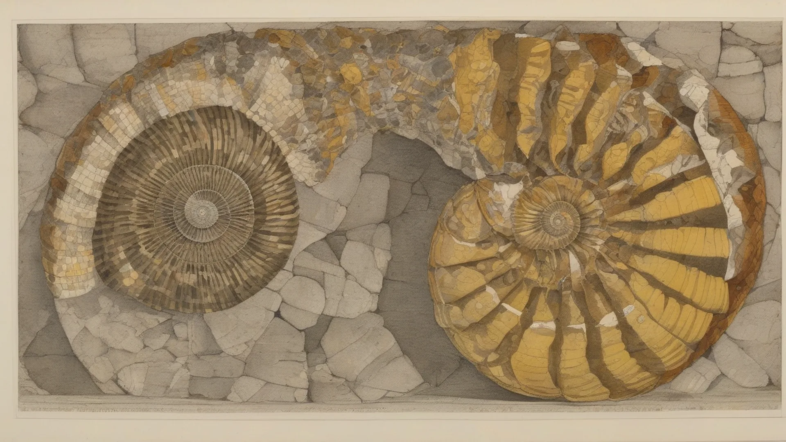
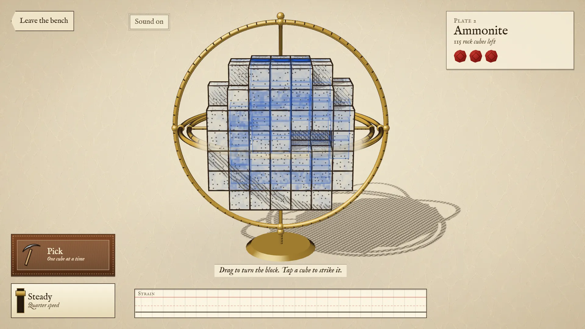
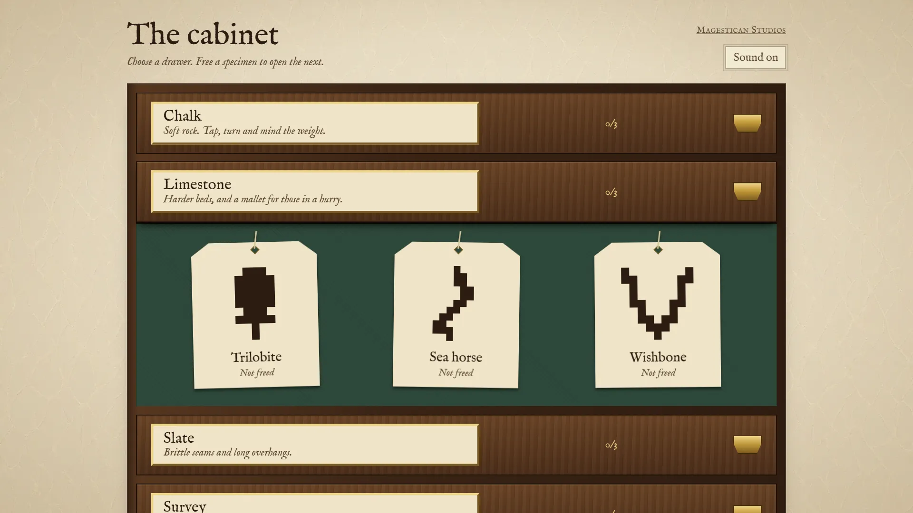

Fossick — an excavation puzzle in your browser
Fossick is an excavation puzzle that runs in your browser: a little treasure sits inside a stack of tiny stone cubes, and you turn the stack and tap the rock away until it stands clear. It might be a heart, a rubber duck or a teddy bear. Strike the treasure and it cracks. Turn the block too hard, or dig away what was holding it up, and the whole thing comes down on your bench. It is free, with nothing to download and no account, on a phone or a laptop, alone or with friends.


Which cubes to leave alone
The tinted cubes are the treasure, and those are the ones you must not strike. Everything else in the block is brown ink, and each cube of it is yours to remove. Three cracks break a treasure and the attempt is over, so before you tap anything, turn the block and find where the colour runs. Part of it is usually hidden on the far side of the view you start with.
Turning the block
Drag to turn the block. On a keyboard the arrows or WASD turn it, Q and E roll it, Shift steadies your hands, Space strikes and R levels it out. The steady lever on screen cuts the speed to a quarter, which is what a phone player reaches for near the end.
The block feels every turn, and we measured how much. Turn slower than 0.04 radians each second and nothing shifts at all. Around 0.25 you can see the cubes stir, and by 1.2 they stir a good deal more. A whole block will survive a firm tumble, but a violent flick lost the game on all 24 blocks in our tests. You can always turn gently, and you cannot always undo a fast turn.
How a block stands and how it falls
How the block stands and falls comes down to digging order, the creak, and knowing that a block left alone stays up. Each cube holds on through its neighbours. A bond in solid rock shares the load with eight others across the same cut, a bond in a thin wall with two, and a bond on a narrow neck has nothing beside it. So the order you dig in decides the game, more than any single tap.
We tested this with scripts on the same physics, on two of the harder blocks, the fern and the wishbone. The script that tunnelled straight in saw both blocks come down. The one that dug farthest from the treasure first got both out whole, with no fall and no crack. Peel the block evenly and leave the rock near the treasure for last.
Rock tires only while you work it: during a turn, for a moment after a blow, or under a load too great for it. A tiring block creaks. Stop when you hear that, and look. We tunnelled into two blocks, stopped at the first creak and took our hands away, and both were still standing a full 90 seconds later, so stopping costs you nothing.
The rocks, the mallet and the seams
There are 12 favourites in four groups, and the rock gets harder to read as you go. Soft rock comes first, with a heart, a rubber duck and an ice cream, and one tap removes a cube. Hard rock holds a cat, a cupcake and a teddy bear. It takes two taps, and its knots of flint take three. Brittle rock holds a butterfly, a flower and a bunny. It comes away at one tap, but it slides along its seams, so a long overhang can leave as one slab.
From the hard rock on you also have the mallet. One swing clears a wider patch and shakes everything harder, and next to the treasure it does real damage. Save the mallet for the far corners.
If you would rather dig for the old kind of treasure, a switch swaps the favourites for 12 fossils in the same rocks, from a cockle and a shark's tooth to a trilobite and a sea horse.
Hidden treasure
The last group takes the colour away. The star, the puppy and the panda are hidden with nothing to show you where they are, and each face of the block counts what lies behind it instead. You read the counts from every side, work out which cubes must be treasure, and dig around your own answer.
Grades on the label
When the last rock goes, the treasure turns in its cradle and a label is stamped. Mint means an unmarked treasure and never more than six cubes dropping together. Fine means one crack at most. Worn means two. Your best grades stay on that device, so you can come back to a Worn teddy bear and do better.
Digging with friends
Send a link or read out a code, and as many as 15 people can share a room. Each person gets the same treasure in a block of their own, so nobody can knock over yours. A small box beside the block shows how far each player has got, and it refreshes about every two seconds. There is no clock. Whoever frees the treasure leads the people still digging, and among those who freed it, the better grade wins. If the host leaves, the box stops moving and you can keep digging.
What is still rough
The balance of the block came from scripts that play it, and no person's play has gone into it, so a treasure may feel harder or easier than its group suggests. We have not measured it on a real phone. Rooms have been tried with two players at once on emulated phones, and never with 15 people. Each rock has its own sound, and we have checked their levels by measurement only. The game's words come in eight languages, and no native reader has checked the seven beyond English yet. This page is in English only. We keep no count of plays for Fossick on this site, and the game earns no badges and gets no place on your shelf yet.
More like this: 2-player games online · Multiplayer browser games